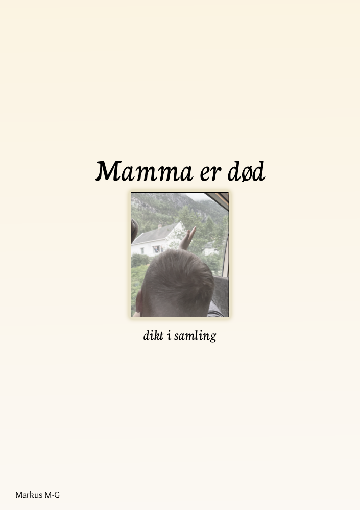

Me veit ikkje alltid kva me driv med, men me gjer det likevel.

Forfattar: Markus Maarnes-Gjærde
Utgjevingsdato: 12. desember 2025
Språk: Nynorsk
«Mamma er død» er ei rå samling av dikt skrevet av Markus Maarnes-Gjærde den fyrste måneden etter mora hans døydde 19. juli 2024.
ISBN: 978-82-694452-0-6